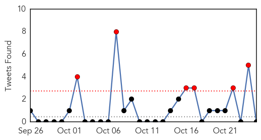

30 Day Trends
Web: 0 alerts, 0 warnings
Twitter: 3 alerts, 0 warnings
Top Articles:
- 0.966
- Turkey MERS case reported
- 0.964
- In wake of student’s death, Metro warns parents about respiratory virus
- 0.962
- Vaccinations could lead to the end of shingles
- 0.952
- Health officials probing death of Tennessee student for possible enterovirus
- 0.917
- Chicago Tribune
- 0.917
- Chicago Tribune
- 0.917
- Chicago Tribune
- 0.886
- Last Chance: Free Flu Vaccine Clinics Next Week
- 0.866
- Five injured in Sarnia, Ontario industrial explosion- CBC
- 0.866
- Many injured in Ontario industrial explosion
- 0.866
- Iraq government forces, militias take control of strategic town
- 0.819
- IMA supports voluntary flu shots for physicians
- 0.807
- Kenya : Research launched to record breast cancer statistics
- 0.799
- Studies Link Cold Sore Virus to Alzheimer's Risk – WebMD
- 0.744
- Common Cold Sores Two-folds Risk of Alzheimer’s Disease, Two New Studies Revealed
- 0.699
- Many land up in hospital
- 0.640
- RU-486 Morbidity and Mortality
- 0.589
- 40,000 children die of diarrhoea, pneumonia annually
- 0.583
- Hospitals vary in their readiness for Ebola cases
- 0.544
- 'Many Exposed' To Ebola Infected Mali Girl
- 0.509
- Probe into man's death at hospital gate
Top Tweets:
-
No tweets found for Oct 25, 2014
Web/News Articles

Tweets
Article Locations

Article Confidences